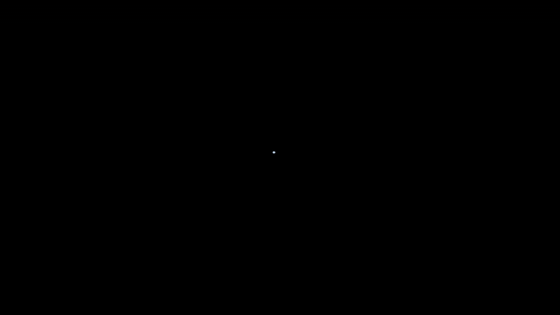
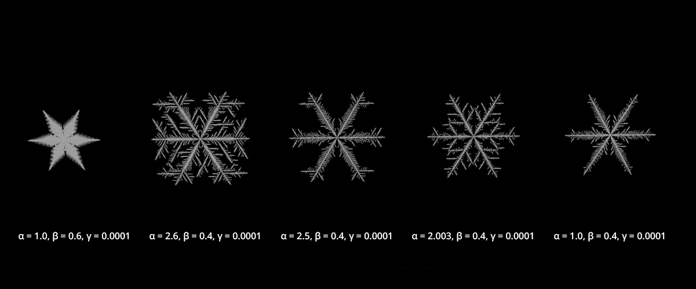

About
A parametric snowflake generator based on cellular growth simulation.
Referenced the paper "A local cellular model for snow crystal growth" (Clifford A. Reiter) to simulate how snowflakes grow. Exposed parameters include Alpha (weighting factor / center seed cell diffusion weight), Beta (background level / distance from initial cell), and Gamma (constant added to the growth of surrounding cells).
Houdini
Cellular Simulation
HDA

